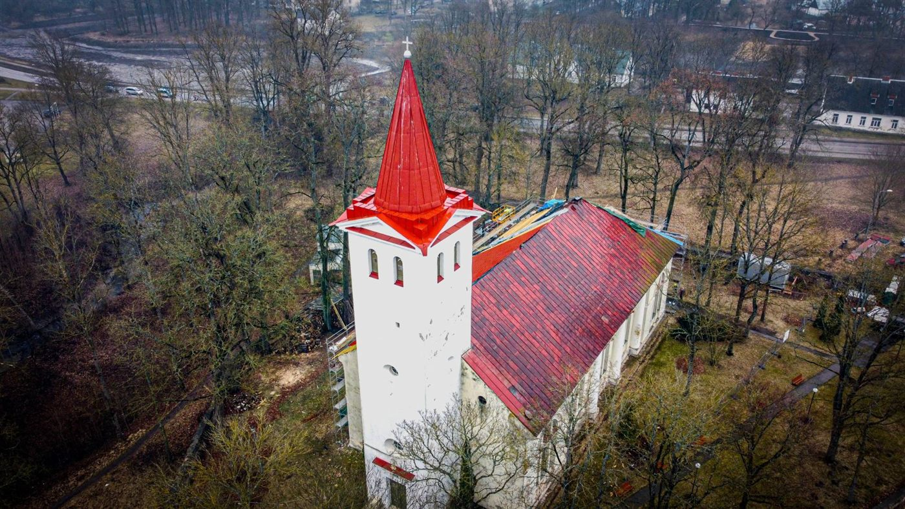

2. vieta · Gada labākā būve Latvijā 2025
Krustpils baznīcas jumta pārbūve
Atbildīgais būvuzraugs un projekta mezglu konsultants. Jumta seguma nomaiņa un konstrukciju atjaunošana.
Apskatīt projektuTehniskā kompetence. Praktiska pieredze.
Tehniskā apsekošana, būvuzraudzība un tehniskie risinājumi jumtiem, fasādēm un hidroizolācijai — pirms remonta, pirkuma vai darbu pieņemšanas.
Pakalpojumi
No pirmās apsekošanas līdz izbūvējamam risinājumam un darbu pieņemšanai.
Jumta, fasādes vai visas ēkas stāvokļa novērtējums.
Neatkarīga pārbaude pirms mājas vai dzīvokļa pirkšanas.
Noplūžu cēloņi, mitrums un hidroizolācijas pārbaude.
Būvuzraudzība, tehniskā un autoruzraudzība.
Risinājumu izvērtēšana, mezgli, darbu apjomi un tāmes.
Kritiena aizsardzība un droša piekļuve jumtam.
Jumts, fasāde, terase, materiāli un ēkas uzturēšana.
Praktiskas apmācības un teorētiski semināri.
Pieredze

Atbildīgais būvuzraugs un projekta mezglu konsultants. Jumta seguma nomaiņa un konstrukciju atjaunošana.
Apskatīt projektuArmands Liede
Tehniskā apsekošana, mezglu risinājumi un darbu kvalitātes kontrole, balstīta praktiskā darbā kopš 1989. gada.
Objekti
Vēsturiskas, publiskas un komerciālas ēkas visā Latvijā.
Jumta pārbūves projekta risinājumi, konsultācijas darbu laikā, jumta tehniskā apsekošana
Jumta tehniskā apsekošana, avārijas seku likvidēšanas darbu uzraudzība
Jumta pārbūves projekta risinājumi, konsultācijas darbu laikā, jumta tehniskā apsekošana
Jumta pārbūves projekta risinājumi, konsultācijas darbu laikā
Projekta risinājumi, pēc kuriem iztāmēti veicamie darbi
Būvuzraugs un projekta tehniskais konsultants
Darba process
Pirms apsekošanas vai konsultācijas precizējam situāciju, lai pārbaude būtu mērķtiecīga un saprotama.
Izvēlaties pakalpojumu, īsi aprakstāt situāciju un, ja iespējams, pievienojat foto vai rasējumus.
Pārskatām informāciju un precizējam, vai vajadzīga konsultācija, apsekošana vai dokumentu izvērtēšana.
Apsekošana, uzraudzība vai konsultācija objektā vai attālināti.
Skaidri secinājumi un praktiski ieteikumi nākamajam solim.
Izvēlieties pakalpojumu un īsi aprakstiet situāciju — pieteikums aizņem apmēram minūti. Sazināsimies par nākamo soli.